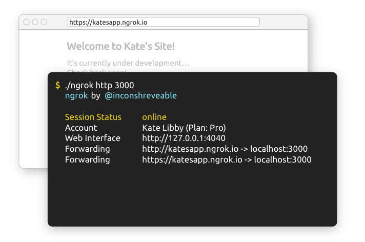

A Runtime Environment to run JavaScript outside the Browser. Think: Server-side JavaScript interpreter.
It uses Chrome's V8 JavaScript engine to compile JS commands into executable code.
It is a free and open source software created in 2009 by Ryan Dahl.
1) Go to: https://nodejs.org/en/download/
2) Download the LTS version for your platform and follow the instructions
3) Once installed, open the terminal and check that node has been installed:
$ node --versionYou should see something like this:
v10.13.0LTS: Stability, rare updates, enterprise-level apps and services, long-term support: 18 months. Better suited for production.
Current/Stable: Front-end tools, local development, regular updates, new features, performance updates, bug fixes, cutting-edge technologies, etc. Support for approximately 8 months.
If you are ready for production, hit for LTS.
Otherwise use Current.
What is the difference between the LTS version
and the stable version of node.js?
What are the differences between Long Term Support (LTS) and Stable versions of Node.js?
$ mkdir app$ cd app$ touch app.jsconsole.log('Node!');$ node app.js$ code app.jsconsole.log( window );$ node app.js ReferenceError: window is not definedWe are not running JS in the browser where the window global object is available.
Built-in functions such as setTimeout() are available both on Node.JS and the Browser.
On the Browser, these built-in functions are methods of the global window Object, whereas in Node.js they are methods of the global object:
window.setTimeoutglobal.setTimeoutUnlike the browser's window object, variables are not automatically added to Node.JS global object.
let message = 1;
global.message == undefined
Read-Eval-Print-Loop
Use the Node REPL to test
Open up your terminal and type
$ node> 4+610Basic REPL commands
> .help> .exit> .break or .clear> .editor> .save> .loadEvery file in Node is considered a Module.
console.log(module);
// NOT a global.module object!Module {
...
exports: {},
...
}Module global variables available: exports, require, module, __filename, __dirname
Think of each JavaScript file a separate Module with its own private scope and context.
$ touch app.js console.log(module); $ node app.js 1) Your own source files
2) Core node modules
2) Installed dependencies in node_modules/ folder
$ touch logger.jslet message = "Module";
function log(){
console.log( message );
}
module.exports.log = log;Both log and message are scoped into the module and are not available outside the module (file). We try to export only a minimal amount of variables and keep things private in the Module.
We can also export a single value, e.g. a function, instead of an object:
module.exports = log;Public URLs for demoing from your machine
https://ngrok.com/